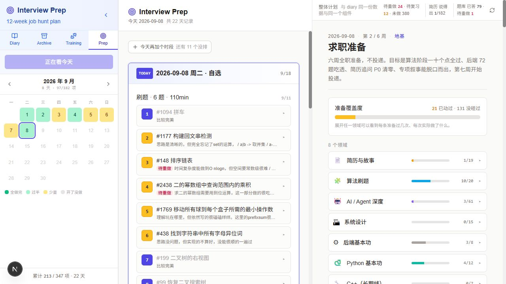

每天选准备内容，系统排到具体题目。
已读取前端、Next.js API、D:\diary 共享核心和实际数据，并核对运行中的只读接口。本轮未修改业务代码。
四个 Tab 已经存在
Diary / Archive
日记与归档文章使用 Markdown 编辑 + 预览。数据分别位于 D:\diary\data\diary 和 D:\diary\data\archive。
Training / Prep
Training 把训练计划变成动作、组数和训练记录；Prep 把面试计划变成时段、题目、作答与复盘。分别写入 training/log 和 interview/log。
Prep 的三栏是：历史日历、所选日期的任务编辑器、准备进度总览。内部 Tab key 是 interview，展开导航显示 Prep，折叠导航显示 Interview。
D:\markdown_editor\app\page.tsx · components\DiaryList.tsx · components\InterviewEditor.tsx · components\interview\OverviewPane.tsx
查看实际界面截图

本地现有页面截图；用于说明界面结构，并非重新设计的 mockup。
两个项目，共用数据与算法
计划、题库、每日记录、答案"] --> B["D:/diary/shared/interview
load + core + leetcode + qbank"] B --> C["Next.js API
D:/markdown_editor/app/api/interview"] C --> D["TodayPicker
选择今天做哪些时段，预览具体题目"] D --> E["POST /api/interview/日期
创建或追加每日 Markdown"] E --> A C --> F["InterviewContext + InterviewEditor
解析任务、记录结果、自动保存"] F --> G["PUT 每日记录 / 题目结果 / 答案"] G --> A B --> H["两边复用的进度计算与 OverviewPanel"]
@shared/* → ../diary/shared/* 直接编译共享代码；数据路径默认指向 D:\diary，部分可用环境变量覆盖。因此仅复制 markdown_editor 并不能得到完整独立应用。D:\markdown_editor\tsconfig.json · next.config.ts · D:\diary\shared\interview\load.ts
一天如何被编排
- 选择时段：TodayPicker 从 /blocks 读取目录；required 时段默认选中，也支持 preset 组合。当前默认刷题是 6 题 / 110min。
- 计算建议：/today?blocks=… 为这些时段绑定知识点、具体题目或简历追问。没有自选时，退回指定日期覆盖或「阶段 × 星期」模板。
- 确认开始：前端把 block IDs、item IDs 和题目 IDs 发给 /[date]；服务器将题号和标题编进每日文件。这一步才把建议落成任务。
- 执行与追加：已有日程按文件展示；重新请求推荐不会重排已经存在的记录。另有“再加时段”和“再来一题”入口。
LeetCode：课程覆盖与复习分别调度
每日路径读取现有 leetcode.json，执行确定性的筛选和排序；没有在每日选题接口中调用 LLM 或在线生成题目。当前题库 466 题，其中课程题 200 题，基础题 152 题，分布在 20 个知识点。
课程线：先覆盖模式
按 inventory 的知识点顺序寻找第一个未通过的专题。专题全部基础题在最近 180 天内有尝试记录，就可以推进；不要求每道题独立做对。
新题限定在课程中带 seq 的 core 题，按 seq 排序。进阶题不阻塞推进，课程走完后进入跨专题混合选择；代码里的 random 模式也仍是排序选题，并未随机抽样。
复习线：按结果回访
复习可以来自其他已训练专题。专题至少一半基础题有近期尝试才解锁复习，当前在学专题直接解锁。
候选先排除近 7 天已尝试、已退休和显式排除的题。复习池要求已到期、历史未过期；排序是重做标记优先，再看“磕磕绊绊”、非最优解，最后比较逾期天数。
- 先取配额内的复习：默认配额为 round(题数 / 4)。6 题对应 2 个复习名额，有合格候选才填满。
- 填当前专题的新题：从未尝试或最后尝试已满 180 天的题进入新题池。
- 当前新题不足：先用更多合格复习题补齐，此时可超过初始复习配额；仍不足才向后续专题取基础题。
- 外层再接回未做项：/today 回看近 21 天，按任务名找最早仍有未完成内容的一天；用独立历史过滤已经解决的题。遗留题放在前面，再保留剩余推荐，因此这是选题算法外的额外一层。
| 首次结果 | 实际首次间隔 | 后续规则 |
|---|---|---|
| 没做出来 / 看了答案 / 磕磕绊绊 | 7 天 | 前两者重置至 7 天；磕磕绊绊约 ×1.2 |
| 非最优解 | 12 天 | 约 ×1.6，上限 180 天 |
| 比较完美 | 21 天 | 约 ×2.5，上限 180 天 |
| 标记待重做 | 最后尝试日期 + 7 天 | 压缩间隔；标记期间不会退休 |
退休条件是最后两次均 clean 且计算出的间隔至少 90 天；并非只要做对两次就退休。180 天过期判断用于课程覆盖和新题池，但推荐器仍先过滤 retired。
D:\diary\shared\interview\leetcode.ts：courseProgress / currentTopic / unlockedTopics / recommendProblems / nextInterval；D:\markdown_editor\app\api\interview\today\route.ts
本轮只读核对：重新计算 2026-09-08 的 6 题建议
课程位置为二叉树，基础题已尝试 3/8。纯函数执行与运行中 GET /today?blocks=leetcode 得到相同题号序列：
- 复习 #1372 二叉树中的最长交错路径
- 复习 #974 和可被 K 整除的子数组
- 新题 #103 二叉树的锯齿形层序遍历
- 新题 #105 从前序与中序遍历序列构造二叉树
- 新题 #129 求根节点到叶节点数字之和
- 新题 #236 二叉树的最近公共祖先
这是读取时的重新计算结果，不是今日文件的原始生成快照；随着历史更新会变化。今天已有 11 道刷题条目，6 是目标而非上限。
“再来一题”与每日批量选择的区别
AddProblem 把当前任务内已有题号作为 exclude 发给 /leetcode/next。后端仍按当前课程取题，并以排除题集合估算当日新旧比例；只有到期的标记重做题在等待、且估算复习量不足时，才主动预留 1 个复习名额。候选不足时仍适用推荐器的复习补齐规则。接口最多一次取 5 题，当前 UI 每次取 1 题。
这个接口使用服务器的今天，未接收所编辑日期；“全日比例”实际依赖调用方传入的当前任务题号集合。
编辑并不只是在打勾
| 内容 | D:\diary\data\interview 下的文件 | 作用 |
|---|---|---|
| 准备框架与范围 | plan.json / inventory.json | 时段、目标、阶段、知识点顺序和说明 |
| 某天做什么、做得怎样 | log/YYYY-MM-DD.md | 任务名、items 标记、题号、结果标签、重做标记和短笔记 |
| LeetCode 历史 | leetcode.json / leetcode-log.json | 静态题库与按题号、日期记录的尝试；派生课程位置和复习时间 |
| Agent / Python / 后端问答 | *-qbank.json + qbank/题目ID.md | 各题库按 seq 推进；独立 Markdown 保存回答和重做状态。Agent 使用 agent-qbank-v2.json |
| 简历、论文、专题沉淀 | resume.json / stories.json / stories/*.md / papers/*.md / topics/*.md | 简历追问按簇推进；论文未标记 finished 会继续推荐；专题笔记跨天复用 |
- 解析：interviewParser 将 Markdown 转成任务块、单题状态和笔记，保留其他文本及 items 绑定；序列化后仍是 Markdown。
- 结果记录：UnitRecord 选择结果时立即 PUT /leetcode，并更新页面中的单题文本；专题名在记录结果后揭示。
- 自动保存：InterviewContext 等待 1.5 秒，把改过的日期整体 PUT 回磁盘。baseContent 用于检测外部编辑冲突，服务端可返回 409。
- 校准历史：每日文件保存后重新提取该日尝试，校准 leetcode-log.json；题库回答正文归独立文件，每日文件只校准重做标记及短原因。
- 刷新总览：页面内每日编辑会覆盖总览的日志快照；题目结果、题库、简历及专题更新通过事件重新读取数据。
还有一个手动 /leetcode/sync-repo 接口，扫描 D:\github\leetcode2020 中的 redo 文件名，给已有历史加标记。它不会自动清除标记，也不是每日题库生成器。当前扫描范围内未找到构建整份 LeetCode 题库的脚本。
下一轮改动可以从这些入口落下去
改每日准备内容与份量
D:\diary\data\interview\plan.json 的 blocks / presets；交互入口在 D:\markdown_editor\components\interview\TodayPicker.tsx。
改题目顺序、复习与过关
课程与基础/进阶归属在 inventory.json / leetcode.json；算法在 D:\diary\shared\interview\leetcode.ts，编排外层在 /today，追加入口在 /leetcode/next。
改做题后的记录体验
D:\markdown_editor\components\interview\UnitRecord.tsx、InterviewContext、interviewParser，以及 /leetcode 与 /[date] 两条保存路径。
改总览与统计口径
D:\markdown_editor\components\interview\OverviewPane.tsx 与 D:\diary\shared\interview\core.ts、leetcode.ts 和共享 ui/OverviewPanel。
已注意到的现状差异，留作后续修改上下文
- 侧栏写 12-week，plan.json 实为 2026-08-27 至 2026-10-08 的 6 周计划。
- inventory 中部分“验收标准”文字仍写独立解题门槛，实际 courseProgress 仅用近期基础题尝试覆盖推进；旧注释也有类似漂移。
- TodayPicker 的 TopUp 分支在 create 常量初始化之前返回，回调却引用 create；这是静态阅读发现的追加时段疑点，本轮未提交真实追加来验证。
- 保存冲突分支更新了磁盘版本后，saveNow 尾部仍统一更新 saved 快照；同样值得在修改保存链路时专项检查。本轮未模拟冲突或写入测试。
验证范围：代码阅读、真实文件核对、只读推荐 GET、共享纯函数执行、现有 UI 浏览。未提交创建、保存、同步仓库或其他修改请求。页面沿用现有 Prep 的 stone / indigo 配色和卡片风格。